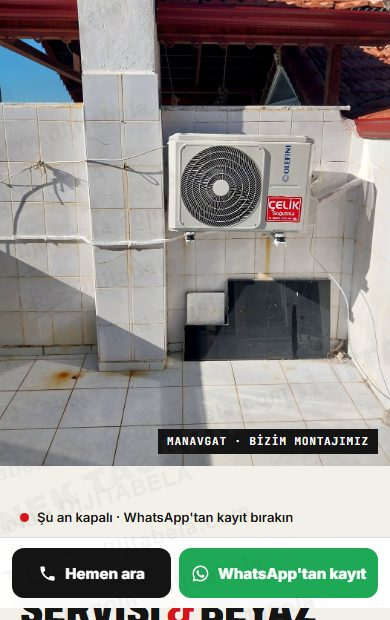
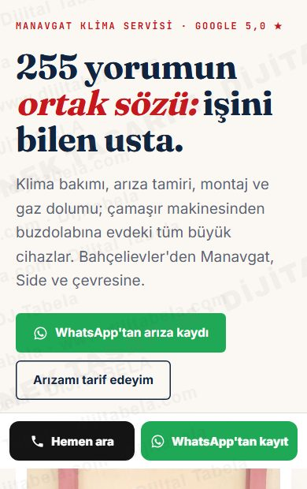
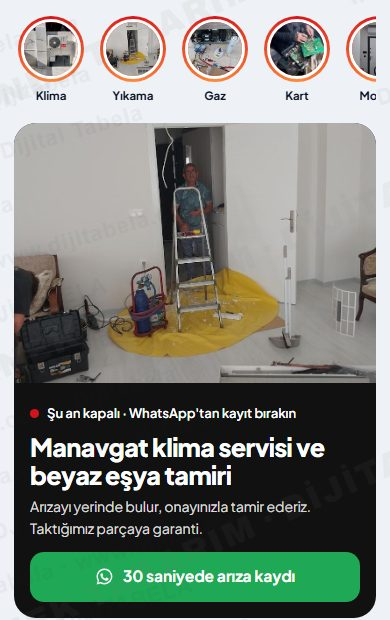

Google'daki gerçek bilgileriniz (5,0 ★, 255 yorum), kendi iş fotoğraflarınız ve servisinize özel çalışan araçlarla hazırladık. Üçü de aynı içerik, üç ayrı yerleşim. Telefonda açıp deneyin; beğendiğinizi söyleyin, kendi alan adınızla yayına alalım.

ÖnerimizAçık zemin, büyük gerçek fotoğraf, numaralı hizmet listesi. Usta işi, sade ve güven veren.
Aç ve dene →
Çerçeveli fotoğraflar, bölüm bölüm hikâye, büyük müşteri alıntıları. Kurumsal ve şık.
Aç ve dene →
Telefon uygulaması gibi: hikâye halkaları, sekmeler, alt menü. Tek elle 30 saniyede kayıt.
Aç ve dene →Örnek tasarımdır, yayında değildir. Formlar demo olarak WhatsApp'a ön dolu mesaj açar. Dijitabela · 0501 945 21 84 · dijitabela.com